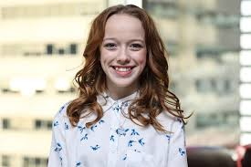
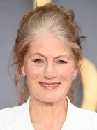
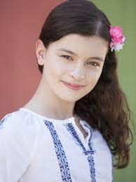
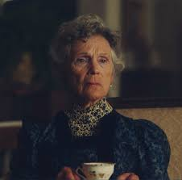
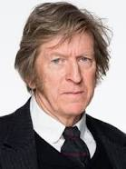

Amybeth McNulty é uma atriz irlando-canadense, protagonista de Anne Shirley que nasceu em 7 de novembro de 2001.Sendo um trabalho de grande importancia a sua carreira, ganhando o premio Canadian Screen Awards e ACTRA Toronto Awards

Geraldine James foi uma atriz de cinema e televisão inglesa que interpretou Marilla na série, nascida em 6 de julho de 1950.Marilla foi a mulher que adotou Anne junto com seu irmão por engano.Sempre demonstrando uma mulher forte, mas após a chegada da pequena Anne seu coração foi amolecendo. Na série ela não possui marido mostrando que ela não necessita de homem para ser feliz.

Dalila Bela, nascida em 5 de outubro de 2001 sendo uma atriz canadense muito conhecida por seu papel como Agente Olive.A jovem atriz tem se destacado muito em sua carreira conquistando muitos prêmios.Ela foi quem interpretou Diana sendo a melhor amiga de Anne, pertencente a uma das familias mais ricas, seus pais sonham que ela vire uma bela dama e se case com um homem rico impedindo-a de seguir seu sonho, mas nem por isso ela deisitiu, permaneceu firme em seu propósito de autodescoberta confrontando seus pais.

Debora Grover é quem interpreta a Joshephine.Na série ela é tia-avó de Diana, uma mulher que não conseguiu suprimir seus anseios, aprendendo que a vida passa e precisamos aproveitar junto de quem nos faz feliz.Indo contra todos e desafiando as crenças da época juntou-se a sua amada Gertrude

R. H. Thomson nasceu em 1947, um ator canadense que atua tanto na televisão quanto em teatros e cinemas com mais de 50 anos desempenhando sua função na arte, recebeu diversos prêmios por suas artes e outros relacionados aos ex-combatentes de guerras. Na série ele foi quem adotou Anne junto á Marilla.